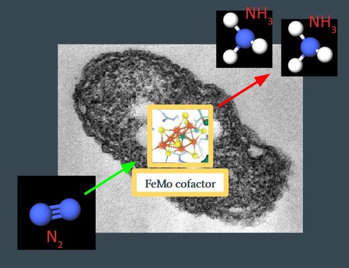

Investigating using VQE for FeMoco
Note: this page is heavily under-construction; you may wish to come back in a week or so.
Introduction
This post serves to aggregate what we learned from a three-month mentorship hosted by the Quantum Open Software Foundation 1, through interactions with our mentor (Vesselin 2) and the other mentees. We are forever grateful for the time and energy they have donated, for which none of this would have been possible.
During the mentorship, we investigated the viability of simulating FeMoco, a cluster of molecules in nitrogenase. The cluster is responsible for the nitrogenase enzyme’s remarkable ability to catalyze nitrogen fixation, so there is significant interest in accurately simulating this molecule. We’ve structured this post to target someone who has /some/ background in quantum computation and computational chemistry, but may not have a full grasp of the process for performing this simulation, and what roadblocks arise. It is more of a pedagogical journey than a textbook – you should feel free to skip sections as needed. So without further ado…
\(\require{mhchem}\)
Problem Overview
The purpose of this project was to calculate the ground state of various derivatives of FeMoco, which is this molecule:

So what is this and why do we care? This is a cluster that appears in nitrogenase, an enzyme responsible for converting gaseous nitrogen (N2) to ammonia (NH3) in soil. The ammonia is then used by plants to synthesize chlorophyll. This process (called nitrogen fixation) is a major bottleneck for plant growth, and therefore food production, and there are industrial processes that attempt to mimic this. The Haber-Bosch process subjects gaseous nitrogen to high temperatures and pressures to break the triple-bond, and produces the majority of the nitrogen supply available to plants today. However, generating this high-pressure environment is energy-expensive, and the Haber process consumes about 1-2% of the world’s energy production. What’s /not/ understood is how nitrogenase can break the triple-bond of N2 at atmospheric temperatures and pressures.
\(N_2 + 3H_2 \rightarrow 2NH_3 \quad (Haber process)\) Haber process (energy-expensive)
\(\ce{N2 + 16ATP + 8e- + 8H+ -> 2NH3 + H2 + 16ADP + 16}\) Nitrogenase-catalyzed nitrogen fixation
This is the question: How does FeMoco actually catalyze nitrogen fixation, and can we scale this process to replace Haber-Bosch?
Background Info
To make this concrete – we know that the reaction starts with \(N_2\) binding with FeMoco, somewhere on the substrate, some process occurs, and \(NH_3\) leaves, with FeMoco itself unmodified:

The goal is to figure out what happens in between. In particular, we expect several stable intermediates to form in between
- TODO We want to find what are the chemical intermediates
- TODO Eyring rate equation
- TODO Energy spectrum
- TODO Lowest energy not necessarily ideal (reference Ian Dance paper)
Quantum Chemistry using Classical Computers
Simulating quantum mechanical systems, such as molecules, has been an important quest in the theoretical chemistry community for some time, and numerous algorithms of different cost and underlying theories are actively researched. For transition metal complexes, due to their complexity, a common choice is to use DFT (density functional theory). Starting from the many-body setup with multiple electrons, protons, and neutrons interacting in the target system, DFT operates on the electron density as a variable, reducing down some complexity of the problem. Based on this background, DFT has some record of treating some moderately-sized molecules chemists are interested in with reasonable cost and accuracy in predicting key chemical properties.
Even with these simplifications, the entire FeMoco complex is quite difficult to simulate with DFT using basis sets that are detailed enough, even with clever choice of the functionals. Because our aim is to pedagogically explore the steps as if we had the resources to complete the simulation on conventional and quantum computers, the simple (and fictitious) complex of Fe2S2, which comprises the core of FeMoco, was used as a model system. Using Orca[^orca] and Avogadro[^avogadro], starting from initial geometries deposited from crystallography, geometry optimization can be performed using the functionals and basis sets (TPSSh and def2-TZVPP in our run) and the frontier orbitals can be plotted. These simulations on a classical computer provide us with a baseline of where things are before we explore the quantum computing side of this tale.
“TODO Add diagrams/visuals from DFT run”
The Variational Principle
Variational principle is the basic reasoning behind the Variational Quantum Eigensolver algorithm (hence its name). Used also in quantum chemical calculations on conventional computers, this principle simply allows us to establish some trial wavefunctions, and each and every trial wavefunctions should follow this relation: E0 ≤ < Ψ | H | Ψ > / < Ψ | Ψ > . Of course when Ψ is exactly the solution of the Hamiltonian H, the equality condition is met. By using the variational principle, we can think of the complicated Hamiltonian problem into a search for global minima of the system.
Variational Quantum Eigensolver
Starting from the variational principle, VQE (Variational Quantum Eigensolver) pretty simply follows. This algorithm starts from some choice of initial wavefunction Ψ0 . Then, on a quantum device, the expectation value of the energy using this wavefunction, namely <Ψ0|H|Ψ0> is evaluated. Back on the classical device, the wavefunction is updated and the expectation is calculated iteratively to achieve the global minima. If the global minimum is found, variational principle allows us to conclude that this is the ground state and the expectation that was evaluated is the ground state energy.
Project Planning
TODO
- Run SCF on FeMoco
- Generate Hamiltonian
- Run VQE on hamiltonian
Extracting the Molecule / Defining the Fock Space
The first step in analyzing the molecule is, naturally, to find the geometry for it. The first structural models appeared in 19783, with the six-atom iron cage discovered in 1992. In 2002, a central atom within the cage was discovered, which was widely believed to be nitrogen. It wasn’t until 2011 when we’d have the correct stoichiometry, when the central atom was determined to be carbon 4.
All of this is to say, a lot of the literature and geometries for FeMoco are incorrect, and it’s important to find a structure from after 2011. Our analysis uses 3U7Q, a protein sample from nitrogenase in Azotobacter vinelandii. The 3D view confirms that this has the correct FeMoco cluster, labeled ICS 6496.
TODO add image of ICS 6496
Sidenote : Hartree-Fock vs. CASSCF
TODO
Generating the Hamiltonian
This is the step that seemed easy at the outset of the project, but we ultimately didn’t give enough respect to – most of the three months were spent here. The path for setting up VQE involves:
- Calculating the one-and-two body integrals for the second quantized electronic Hamiltonian
- Constructing a fermionic operator
- Converting the fermionic operator into a qubit operator
The problem is that the two-body term in the electronic Hamiltonian is a 4-tensor over the number of orbitals in the Fock space, which scales as O(N^4) (where N is the number of spin-orbitals). A molecule such as FeMoco, with ~200 orbitals, will have 400 spin-orbitals, meaning the two-body tensor will have 25,600,000,000 elements. If we store each element as a 64-bit floating point (8 bytes), simply storing the matrix will cost 204,800,000,000 bytes = 204 GiB. This is also too large to store in RAM, so mathematical operations on it become expensive.
There are a few simplifications we can make. The first one we tried was using 32-bit floating points instead of 64-bit, which should halve the storage requirements to ~100 GiB. However, the biggest simplification involved freezing and removing irrelevant orbitals.
A converged ROHF run on FeMoco yields the following orbitals:
TODO orbital energies
This result was gathered by using PySCF’s
scf.analyze().
The assumption is that electrons in the low-energy orbitals will effectively
never leave – hence, their effect on the dynamics of the rest of the structure
can be represented as a static electric potential. Similarly, the high-energy
orbitals are unlikely to be filled, and can be removed.
It is not clear to us how one can safely determine how many orbitals can be frozen or removed. We more or less arbitrarily chose to freeze orbitals 1-184, and remove orbitals 190-239, leaving an active space of 6 orbitals. This is almost certainly too severe of an approximation, but the priority was to generate the minimum-viable VQE circuit, and then slowly relax the optimizations. All of the orbitals above #58 or so are nearly degenerate in energy, so a proper analysis will likely need to include them in the active space.
Once we have the reduced active space, we can choose a proper mapping (Bravyi-Kitaev or Jordan-Wigner) to generate a qubit operator, and then the corresponding VQE circuit. Unfortunately, the freezing and removal steps are themselves non-trivial due to the memory requirements mentioned above, and require a proper analysis.
Details on Qiskit / PySCF libraries
In Qiskit-Aqua 0.8.1, freezing and reduction of orbitals is performed by the FermionicTransformation class.
class FermionicTransformation(
transformation=<FermionicTransformationType.FULL: 'full'>,
qubit_mapping=<FermionicQubitMappingType.PARITY: 'parity'>,
two_qubit_reduction=True,
freeze_core=False,
orbital_reduction=None,
z2symmetry_reduction=None):
A transformation from a fermionic problem, represented by a driver, to a qubit operator.
The orbital_reduction parameter can be used to specify which orbitals to
freeze/remove. The user then calls
.transform(driver) to
generate the qubit operator.
If we use this straight with our molecule, we run into memory allocation errors. So let us look at the implementation of this function to see where we can reduce the memory requirements.
The
FermionicTransformation() constructor itself is
uninteresting, as it only assigns parameters. The meat of the function happens
in
.transform():
def transform(self, driver: BaseDriver,
aux_operators: Optional[List[FermionicOperator]] = None
) -> Tuple[OperatorBase, List[OperatorBase]]:
...
q_molecule = driver.run()
ops, aux_ops = self._do_transform(q_molecule, aux_operators)
...
return ops, aux_ops
This calls driver.run() (which is PySCF’s .kernel()) and then passes the
result to self._do_transform():
def _do_transform(self, qmolecule: QMolecule,
aux_operators: Optional[List[FermionicOperator]] = None
) -> Tuple[WeightedPauliOperator, List[WeightedPauliOperator]]:
...
# In the combined list any orbitals that are occupied are added to a freeze list and an
# energy is stored from these orbitals to be added later.
# Unoccupied orbitals are just discarded.
...
# construct the fermionic operator
fer_op = FermionicOperator(h1=qmolecule.one_body_integrals, h2=qmolecule.two_body_integrals)
# try to reduce it according to the freeze and remove list
fer_op, self._energy_shift, did_shift = \
FermionicTransformation._try_reduce_fermionic_operator(fer_op, freeze_list, remove_list)
...
Here we run into the first computational bottleneck.
qmolecule.two_body_integrals is actually not a variable; it’s a method defined as such:
@property
def two_body_integrals(self):
""" Returns two body electron integrals. """
return QMolecule.twoe_to_spin(self.mo_eri_ints, self.mo_eri_ints_bb, self.mo_eri_ints_ba)
self.mo_eri_ints, self.mo_eri_ints_bb, and self.mo_eri_ints_ba are (N, N,
N, N)-dimensional numpy arrays representing the two-body tensor, where N is the
number of spatial orbitals. Each matrix represents a subsection of the full
spin-orbital Fock space, in this way:
TODO better diagram
alpha beta
----------------> ---------------->
| -----------------------------------
a | | | |
l | | | |
p | | mo_eri_ints | mo_eri_ints_ba |
h | | | |
a v | | |
-----------------------------------
b | | | |
e | | | |
t | | mo_eri_ints_ab | mo_eri_ints_bb | (where mo_eri_ints_ab = mo_eri_ints_ba.transpose() )
a | | | |
v | | |
-----------------------------------
twoe_to_spin() aggregates the spatial matrix into one large spin-orbital
matrix, but in doing so doubles each of the 4 dimensions, resulting in a
16-fold increase in memory requirements. This can be seen in the source for
twoe_to_spin():
def twoe_to_spin(mohijkl, mohijkl_bb=None, mohijkl_ba=None, threshold=1E-12):
"""Convert two-body MO integrals to spin orbital basis
Takes two body integrals in molecular orbital basis and returns
integrals in spin orbitals ready for use as coefficients to
two body terms in 2nd quantized Hamiltonian.
Args:
mohijkl (numpy.ndarray): Two body orbitals in molecular basis
(AlphaAlpha)
mohijkl_bb (numpy.ndarray): Two body orbitals in molecular basis
(BetaBeta)
mohijkl_ba (numpy.ndarray): Two body orbitals in molecular basis
(BetaAlpha)
threshold (float): Threshold value for assignments
Returns:
numpy.ndarray: Two body integrals in spin orbitals
"""
ints_aa = numpy.einsum('ijkl->ljik', mohijkl)
if mohijkl_bb is None or mohijkl_ba is None:
ints_bb = ints_ba = ints_ab = ints_aa
else:
ints_bb = numpy.einsum('ijkl->ljik', mohijkl_bb)
ints_ba = numpy.einsum('ijkl->ljik', mohijkl_ba)
ints_ab = numpy.einsum('ijkl->ljik', mohijkl_ba.transpose())
# The number of spin orbitals is twice the number of orbitals
norbs = mohijkl.shape[0]
nspin_orbs = 2*norbs
# The spin orbitals are mapped in the following way:
# Orbital zero, spin up mapped to qubit 0
# Orbital one, spin up mapped to qubit 1
# Orbital two, spin up mapped to qubit 2
# .
# .
# Orbital zero, spin down mapped to qubit norbs
# Orbital one, spin down mapped to qubit norbs+1
# .
# .
# .
# Two electron terms
moh2_qubit = numpy.zeros([nspin_orbs, nspin_orbs, nspin_orbs,
nspin_orbs])
for p in range(nspin_orbs): # pylint: disable=invalid-name
for q in range(nspin_orbs):
for r in range(nspin_orbs):
for s in range(nspin_orbs): # pylint: disable=invalid-name
spinp = int(p/norbs)
spinq = int(q/norbs)
spinr = int(r/norbs)
spins = int(s/norbs)
if spinp != spins:
continue
if spinq != spinr:
continue
if spinp == 0:
ints = ints_aa if spinq == 0 else ints_ba
else:
ints = ints_ab if spinq == 0 else ints_bb
orbp = int(p % norbs)
orbq = int(q % norbs)
orbr = int(r % norbs)
orbs = int(s % norbs)
if abs(ints[orbp, orbq, orbr, orbs]) > threshold:
moh2_qubit[p, q, r, s] = -0.5*ints[orbp, orbq, orbr,
orbs]
return moh2_qubit
The full spin-orbital array is allocated in this line:
moh2_qubit = numpy.zeros([nspin_orbs, nspin_orbs, nspin_orbs, nspin_orbs])
and each value in the (2N, 2N, 2N, 2N)-dimensional array is computed and
stored. This upfront performance penalty is superfluous with our use case, where
most of the orbitals will be removed. Additionally, numpy arrays generally
don’t want to be iterated over with Python loops – their performance benefits
come from looping at the C level, where the reduced overhead leads to more
frequent cache hits. The current implementation does have some benefits, as it
prevents having to allocate large mesh grids and is much easier to read than
fully vectorized code. More on this later.
The second performance bottleneck comes from the _try_reduce_fermionic_operator()
call, which performs the actual freezing/removal:
def _try_reduce_fermionic_operator(fer_op: FermionicOperator,
freeze_list: List,
remove_list: List) -> Tuple:
"""
Trying to reduce the fermionic operator w.r.t to freeze and remove list
if provided
Args:
fer_op: fermionic operator
freeze_list: freeze list of orbitals
remove_list: remove list of orbitals
Returns:
(fermionic_operator, energy_shift, did_shift)
"""
# pylint: disable=len-as-condition
did_shift = False
energy_shift = 0.0
if len(freeze_list) > 0:
fer_op, energy_shift = fer_op.fermion_mode_freezing(freeze_list)
did_shift = True
if len(remove_list) > 0:
fer_op = fer_op.fermion_mode_elimination(remove_list)
return fer_op, energy_shift, did_shift
This simply runs
fermion_mode_freezing()
and fermion_mode_elimination()
one after the other. The code gets pretty hard to follow here; we’ll attempt to
describe the operations diagrammatically:
TODO h2.png
First, twoe_to_spin() combines the four sub-integrals (mo_eri_ints and
variants) into a single large 4-tensor (the diagram is 2-dimensional, but is
intended to represent a 4-dimensional cube of sorts). Some orbitals (in red)
are simply deleted. The rest of the elements are handled as follows:
TODO h2_frozen.png
Further Work
Although our approach to this problem has been largely pedagogical, it reveals where future works on the topic can be directed towards. Without major improvements in the quantum hardware, treating the full space of transition metal complexes will remain a very difficult task.
- Effective treatment of core freezing and removal of virtual orbital in Hamiltonian construction
- Comprehensive study of the portability of Hamiltonian reduction mechanisms used in conventional computers to quantum computer based algorithms (i.e. ECPs, pseudopotentials)
TODO: expand more
Useful Papers
TODO
Footnotes
DeBeer S. The discovery of Mo(III) in FeMoco: reuniting enzyme and model chemistry. J Biol Inorg Chem. 2015;20(2):447-460. doi:10.1007/s00775-014-1230-6 [^orca]: https://orcaforum.kofo.mpg.de/ [^avogadro]: https://avogadro.cc/
-
-
. Cramer SP, Hodgson KO, Gillum WO, Mortenson LE. J Am Chem Soc. ↩